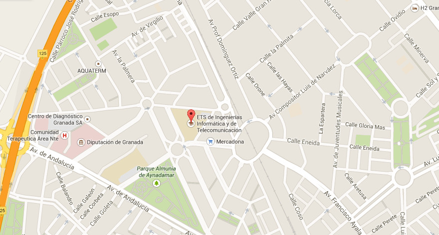
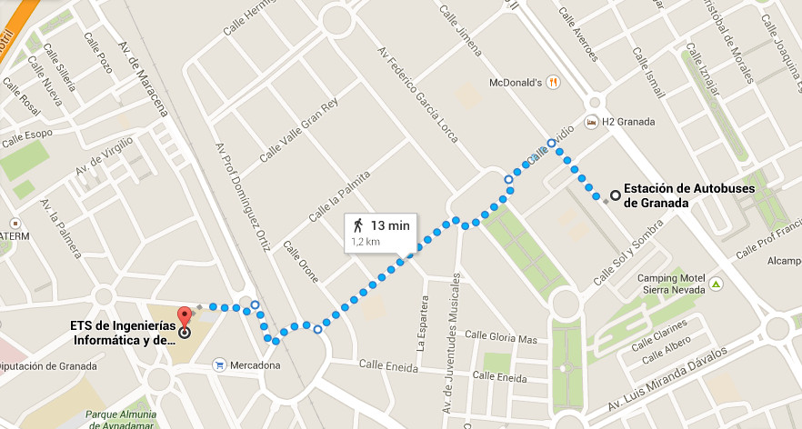
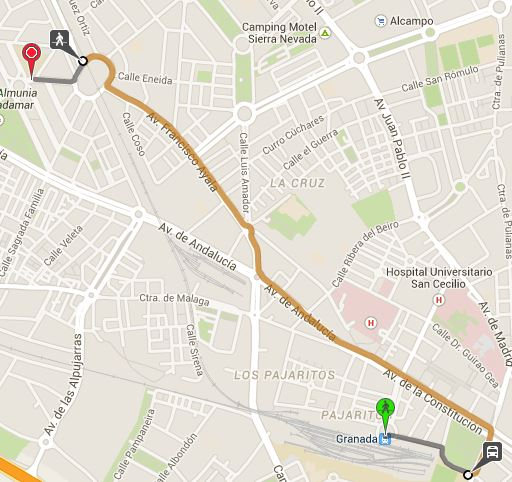
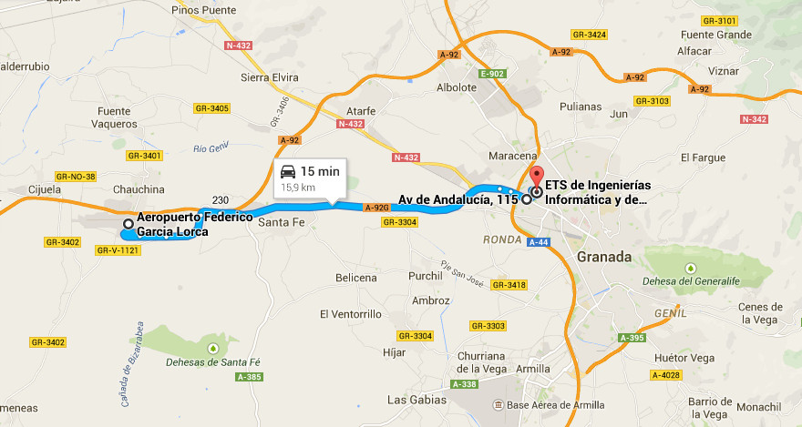

Localización
El congreso se realizará en la Escuela Técnica Superior de Ingeniería Informática y Telecomunicaciones (ETSIIT), este edificio se encuentra situado en la calle Calle Periodista Daniel Saucedo Aranda s/n (CP 18014) dentro del barrio de la Chana en Granada capital.El siguiente plano muestra la ubicación exacta (Coordenadas GPS: 7°11'48.1"N 3°37'28.3"W / 37.196689, -3.624534):

Trayecto desde la estación de autobuses
La mejor forma de llegar es a pie, está a 13 minutos andando (1.2 Kms):

Trayecto desde la estación de Renfe
La mejor forma de llegar es usando el transporte público (autobús) mediante la siguiente combinación (alrededor de 23 minutos):-
Andar hasta Marín Ocete (alrededor de 7 minutos, 285 m.)
-
Coger autobús N3 (Cerrillo Maracena - Rector Marín Ocete) hasta Plaza de Europa (11 minutos)
- Andar desde parada Plaza de Europa hasta la ETSIIT (alrededor de 4 minutos, 229 m.)
Trayecto desde el aeropuerto
La compañía encargada del servicio de autobuses Granada - Aeropuerto es Autocares Jose González. En su primera parada desde el aeropuerto (15 minutos), sigue el trayecto hasta el punto blanco cercano a la facultad. Desde ahí hay que subir andando por la calle Periodista Eugenio Selles 450 m. (6 minutos) hasta la ETSIIT.